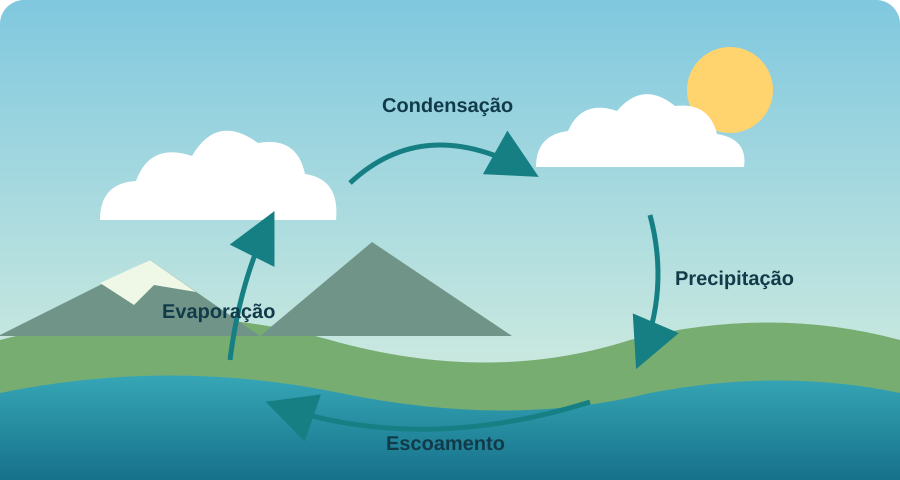
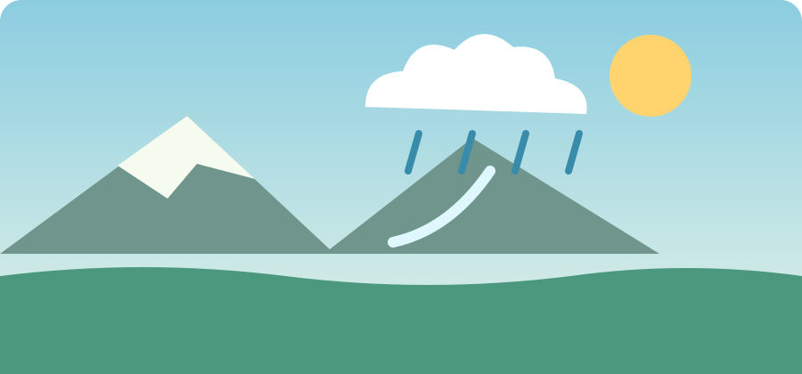
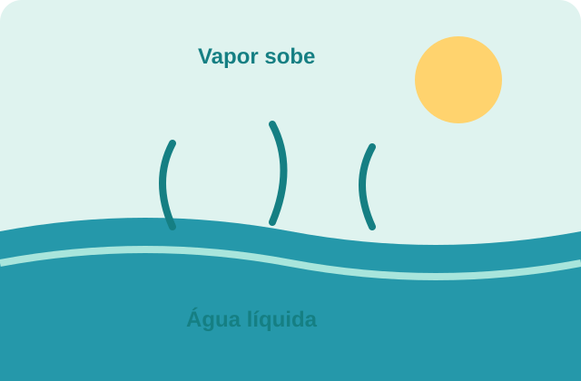
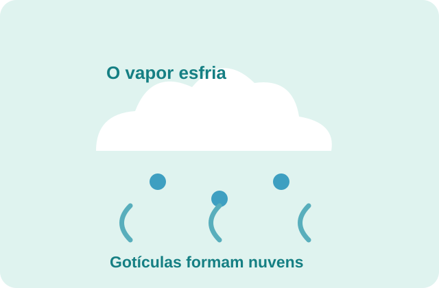
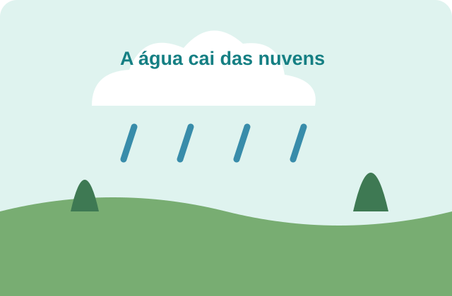
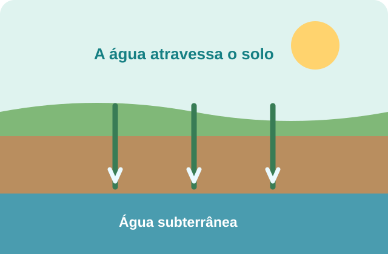

CIÊNCIAS · MEIO AMBIENTE
O ciclo da água
A água está sempre em movimento entre a superfície da Terra e a atmosfera. Esse caminho contínuo é chamado de ciclo da água.

O que é o ciclo da água?
O ciclo da água, também chamado de ciclo hidrológico, descreve a circulação da água no planeta. A água muda de lugar e de estado físico — líquido, gasoso ou sólido —, mas continua sendo parte do mesmo sistema natural.
Evaporação e condensação
O calor do Sol aquece a água de mares, rios, lagos e do solo. Parte dela passa do estado líquido para o gasoso, em um processo chamado evaporação. As plantas também liberam vapor de água para o ar; esse processo é chamado transpiração.
Ao subir, o vapor encontra temperaturas mais baixas e esfria. Ele se condensa em pequenas gotículas, que podem formar nuvens. A passagem do vapor para o estado líquido recebe o nome de condensação.
Precipitação e retorno da água
Quando as gotículas das nuvens se juntam e ficam pesadas, a água pode cair como chuva, neve ou granizo. Esse processo é chamado de precipitação. Uma parte da água escoa pela superfície até rios e oceanos; outra infiltra-se no solo e pode abastecer águas subterrâneas.
O ciclo não tem um único ponto de começo ou fim. A água pode permanecer algum tempo em uma geleira, no subsolo, em um lago ou na atmosfera antes de continuar seu percurso.

AS ETAPAS EM DETALHE
A água está sempre viajando
Veja alguns processos que fazem parte do ciclo hidrológico.




Referências
Texto resumido e adaptado para fins educativos. As ilustrações foram criadas para esta página.